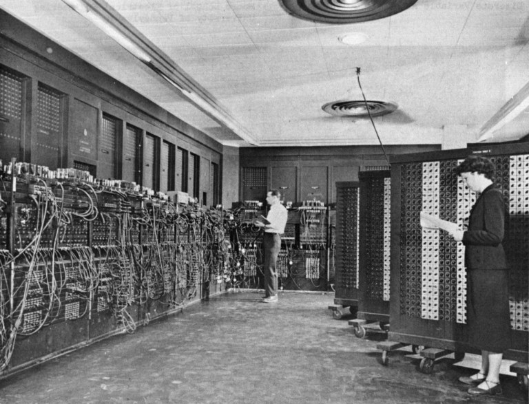
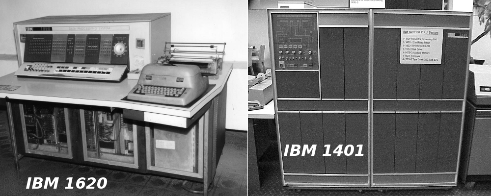

Sistemas Operacionais

PRIMEIRA GERAÇÃO (1945 - 1955)
Na época em que os computadores eram desenvolvidos com válvulas, relés, resistências,
onde personagens como John Atanasoff
e seu aluno Clifford Berry, Konrad Zuse, William
Mauchley e seu aluno J. Presper Eckert, e toda a equipe que trabalhou nos projetos
como o
Colossus, o Mark, o ENIAC dentre outros ainda não havia desenvolvimento de Sistemas
Operacionais. Os computadores
funcionavam por meio de uma equipe complexa onde programar,
operadorar, responsáveis pela manutenção, projetar eram atividades
essenciais para o
funcionamento destas complexas máquinas. Imagine você usando este computador:
Você iria projetar o programa
em linguagem de máquina para calcular uma raiz quadrada,
iria ―escrever este programa configurando as válvulas e conectando plugs
corretamente para
fazer este cálculo, iria iniciar o calculo que em alguns casos iriam poderia demorar horas e
ainda torcer para que nenhuma
das válvulas queimassem (haviam computadores com mais de duas mil válvulas)
e caso isto acontecesse você teria que procurar quais
queimaram, substitui-la e iniciar todo os processo.
Agora, você pode imaginar que não era simples utilizar os computadores na primeira geração.

SEGUNDA GERAÇÃO (1955 - 1965) – SISTEMAS EM LOTE ( BATCH )
Nesta geração, as válvulas e relés começaram a serem substituídos por transistores, com
isto, o processamento das informações passaram
a ser mais rápidas, o consumo de energia
diminuiu dentre outras melhorias. Os computadores desta geração eram mais confiáveis e de
grande
porte (conhecidos como mainframes) e por isto, começaram a ser produzidos comercialmente
e por encomenda. foi nesta época onde houve
uma necessária separação entre as funções do
projetista, do fabricante, do programador, do operador e do técnico em manutenção,
cada um
responsável por uma parte no funcionamento da máquina. Nesta geração, a forma de processar um
programa evoluiu. Primeiramente,
o programador escrevia no papel em linguagem assembly ou Fortran
e depois perfurava em cartões. Com estes cartões prontos, o programador
entregava-os aos operadores
na sala de entrada. Depois de um certo tempo, o programador retirava na sala de saída o resultado
impresso do
calculo programado. Então, o operador estava constantemente entrando e saindo da sala
de máquinas para trocar os cartões de entrada.

TERCEIRA GERAÇÃO (1965 - 1980) – CIS E A MULTIPROGRAMAÇÃO
A nível de Hardware, a grande características desta geração foram os Circuitos Integrados
que, com a redução do tamanho dos transistores várias
unidades de processamento puderam ser
colocadas em um menor espaço, permitindo assim que todos os custos fossem reduzidos e a
velocidade
de processamento aumentasse. A empresa pioneira nesta tecnologia foi a IBM com o
lançamento do IBM 360.A nível dos SO, vale-se destacar o
aparecimento de técnicas como a multiprogramação,
spooling, timesharing, que trouxeram conceitos fundamentais para o desenvolvimento dos
SO
modernos. Seguindo esta linha os SO desta geração a técnica de multiprogramação foi
implementada. Quando uma tarefa terminava de usar
a processador (CPU) e era encaminhada
para os dispositivos de Entrada e Saída (E/S) a CPU ficava ociosa esperando a nova tarefa
enquanto
terminava a operação de E/S. Outra técnica desenvolvida foi a de spooling (este termo deriva de simultaneus peripheral
operation online) que
permitia o carregamento de outra tarefa vinda dos cartões perfurados
automaticamente para partições que foram recentemente liberadas. Com
esta técnica, além de
automatizar a entrada das informações, permitia que o resultado já fosse automaticamente
impresso na saída. o timesharing
é uma variante da multiprogramação que permite que o processador
possa executar longas tarefas simultaneamente com as pequenas.
A necessidade de
implementação do timesharing surgiu com a utilização do mesmo computador por mais de um
usuário.
QUARTA GERAÇÃO (1980- PRESENTE ) – COMPUTADORES PESSOAIS
Esta geração é caracterizada por Sistemas Operacionais desenvolvidos para
Computadores Pessoais. Tudo começou com o CP/M
(Control Program for Microcomputers – Programa de Controle
para Microcomputadores) desenvolvido por Kildall que recusou um contato
para possível
negociação do CP/M para a IBM (indicado por Bill Gates) o que foi considerado por muitos a pior
decisão de negócios da história
da Informática. Possuindo o interpretador de comandos Basic Bill
Gates conhecia a Seattle Computer Products que possuía um sistema operacional
que se
adequava às necessidades da IBM o DOS (Disk Operating System – Sistema Operacional de
Disco) e com uma negociação que definiu o
futuro de uma das maiores empresas de softwares
do mundo atual, a Microsoft, Gates comprou o DOS por estimados 75 mil dólares e fechou
uma
parceria com a IBM. O DOS, após revisões da pequena empresa Microsoft, teve seu nome
mudado para MS-DOS (MicroSoft Disk Operating
System – Sistema Operacional de Disco da
MicroSoft). Até então, os Sistemas Operacionais eram no ―modo texto, uma tela preta e branca
(em alguns casos verdes) que o usuário operava o sistema por meio de comandos.
QUINTA GERAÇÃO (2007- PRESENTE ) – DISPOSITIVOS MÓVEIS
Paralelamente à quarta geração, surgiram os dispositivos móveis que com a evolução da
nanotecnologia os celulares, smartphones, tablets,
eletrodomésticos, palmtops, foram ficando
cada vez mais complexos, e para operar todos os componentes de hardware destes dispositivos,
foram desenvolvidos vários SO como o Palm OS, o Android, o Windows Phone, o iOS, Symbian
OS, Blackberry OS e outros. A principal característica
destes SO é operar equipamentos de pequeno porte, com um
Hardware menos poderoso que um computador pessoal tornando a utilização do
dispositivo mais
interativa e dinâmica. Veremos no decorrer deste manual mais informações sobre estes tipo de
SO.